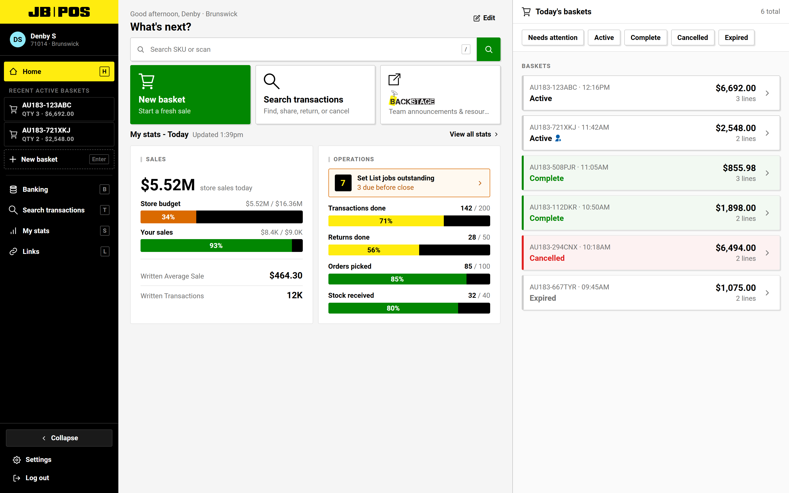
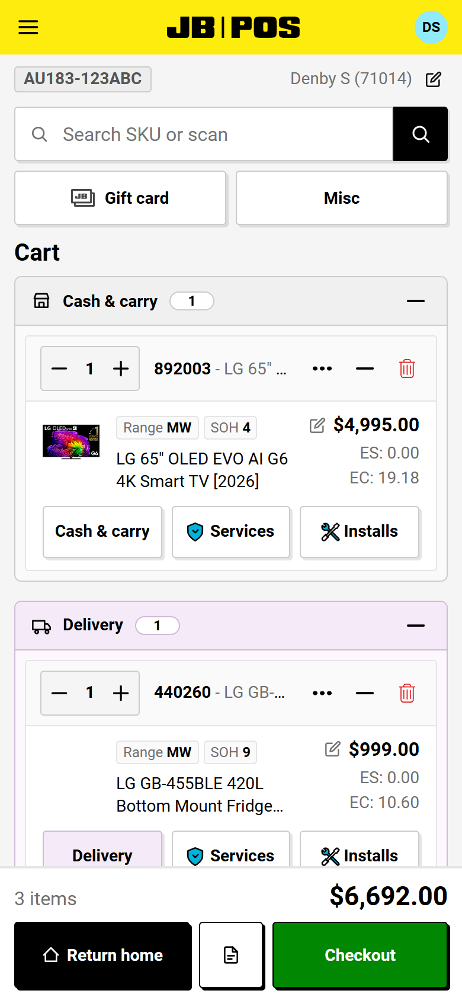

The challenge
Replacing OnStage with JB POS left gaps in tools store teams used. I explored how those tasks could fit into the newer system.
JB POS [AMPED] · Retail systems & responsive UX
A self-initiated POS prototype I designed and built alongside my work at JB Hi-Fi. It gave me room to explore ideas beyond current delivery constraints and bring that thinking back into live feature work.
Self-initiated exploration · Desktop & PDA prototype


Replacing OnStage with JB POS left gaps in tools store teams used. I explored how those tasks could fit into the newer system.
I independently developed concepts, mapped workflows and business rules, and directed and reviewed an AI-assisted prototype build.
A working desktop and PDA concept for exploring POS ideas. It is not a planned JB Hi-Fi product.
01 / Experience & ownership
I know the pace, interruptions and edge cases of store work, and the shortcuts people build when a system does not match the task in front of them.
AMPED is a self-initiated exploration. It uses that context to examine ideas, but it does not represent a shipped or planned JB Hi-Fi product.
02 / Design changes
I used a persistent context column so product details, stock, services and next actions can stay close to the basket instead of opening separate tools.
Salespeople, merchandisers and new starters share the same flows. The concept allows experience and permissions to shape what each person can reach.
Saved baskets, delivery, installs and payment checks belong to the same job. The prototype keeps them visible as one connected workflow.
The product-family view lists the actual variants with price and availability together. Colour and storage filters narrow the list without hiding the range.
One decision across desktop and handheld

03 / Exploration into practice
I started with familiar store tasks, the rules around them and the places where people move between systems or rely on memory.
A blue-sky prototype let me compare interaction options beyond current delivery constraints and make the trade-offs concrete.
The useful output is the reasoning: clearer states, connected tasks and responsive patterns that can inform live feature conversations.
Explore the other side of the practice

Game design · UX · code
TAIXU
An independent game project spanning systems, interface design, implementation and testing.
Need a designer, have a role in mind, or want to talk through an idea? I’d love to hear from you.